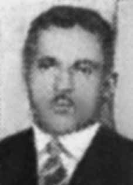

Lucindo
Costa
CIRCUNSTÂNCIAS DA MORTE
Em 24 de julho de 1967, Lucindo Costa partiu em viagem de trabalho para Curitiba (PR), da qual deveria retornar naquele mesmo dia. Sua família não teve mais notícias e, como ele havia sido preso duas semanas antes, decidiram registrar o fato nas delegacias de Mafra e Rio Negro, além de procurarem amigos e conhecidos de Lucindo em Curitiba, mas não conseguiram qualquer informação sobre seu paradeiro. Cinco dias depois de seu desaparecimento, em 31 de julho de 1967, Lucindo foi demitido de seu emprego por “incontinência de conduta e indisciplina”,iii apesar de que, em sua ficha funcional, não constava qualquer advertência contra ele. Em agosto, um oficial do Exército se apresentou na casa de Lucindo Costa e confiscou todos os documentos e todas as cartas endereçadas a ele. iv Sem informações, Elisabeth Baader, sua esposa, dirigiu-se à Curitiba (PR) com uma das filhas e na cidade percorreu hospitais, delegacias e necrotérios. Em uma das viagens, recebeu a notícia de que Lucindo teria sido atropelado e enterrado como indigente no cemitério Santa Cândida. Conduzida a um necrotério da cidade, foi induzida a reconhecer o corpo de desconhecido como o de seu marido, ocasião em que recebeu também uma certidão de óbito que apontava como causa de morte traumatismo crânioencefálico. O documento, datado de 15 de novembro de 1967 e assinado pelo Dr. José C.C. Albuquerque, indica que Lucindo morreu em 26 de julho de 1967, às 20 horas e 30 minutos, no Pronto Socorro Municipal da cidade. Apesar de na certidão constar filiação e lugar de residência, Lucindo foi enterrado como indigente no cemitério Santa Cândida, em Curitiba. v No livro de registros do cemitério consta, na fila 500, o nome de Lucindo Costa, enterrado com a placa nº 12.197, setor E, quadra 12, lote 32. A quadra está hoje desativada e os restos mortais foram colocados em um ossário. Em 1992, foi realizada uma homenagem aos mortos e desaparecidos políticos de Santa Catarina quando Lucindo foi reconhecido como a oitava vítima da região. O caso teve grande repercussão na imprensa, o que impulsionou novas buscas de informações sobre seu paradeiro. Foram coletados documentos e depoimentos nas comissões de presos políticos realizadas nos estados do Paraná e de Santa Catarina que permitiram comprovar seu envolvimento político.
On July 24, 1967, Lucindo Costa left on a work trip to Curitiba (PR), from which he was supposed to return that same day. His family had no further news and, as he had been arrested two weeks earlier, they decided to register the incident at the Mafra and Rio Negro police stations, in addition to looking for Lucindo's friends and acquaintances in Curitiba, but were unable to obtain any information about his whereabouts. Five days after his disappearance, on July 31, 1967, Lucindo was fired from his job for “incontinence of conduct and indiscipline”,iii despite the fact that, in his employment record, there was no warning against him. In August, an Army officer showed up at Lucindo Costa's house and confiscated all documents and letters addressed to him. iv Without information, Elisabeth Baader, his wife, went to Curitiba (PR) with one of her daughters and visited hospitals, police stations and morgues in the city. On one of his trips, he received news that Lucindo had been run over and buried as a pauper in the Santa Cândida cemetery. Taken to a city morgue, she was induced to recognize the body of a stranger as that of her husband, at which time she also received a death certificate that indicated traumatic brain injury as the cause of death. The document, dated November 15, 1967 and signed by Dr. José C.C. Albuquerque, indicates that Lucindo died on July 26, 1967, at 8:30 pm, in the city's Municipal Emergency Room. Despite the certificate stating his affiliation and place of residence, Lucindo was buried as a pauper in the Santa Cândida cemetery, in Curitiba. v The cemetery's record book contains, in line 500, the name of Lucindo Costa, buried with plate nº 12.197, sector E, block 12, lot 32. The block is now deactivated and the remains were placed in an ossuary. In 1992, a tribute was held to the dead and missing politicians in Santa Catarina when Lucindo was recognized as the region's eighth victim. The case had great repercussion in the press, which led to new searches for information about his whereabouts. Documents and testimonies were collected from commissions on political prisoners held in the states of Paraná and Santa Catarina, which made it possible to prove their political involvement.
El 24 de julio de 1967, Lucindo Costa partió en viaje de trabajo a Curitiba (PR), de donde debía regresar ese mismo día. Su familia no tuvo más noticias y, como había sido detenido dos semanas antes, decidieron registrar el hecho en las comisarías de Mafra y Río Negro, además de buscar a amigos y conocidos de Lucindo en Curitiba, pero no lograron obtener información sobre su paradero. Cinco días después de su desaparición, el 31 de julio de 1967, Lucindo fue despedido de su trabajo por “incontinencia de conducta e indisciplina”,iii a pesar de que, en su expediente laboral, no constaba ninguna advertencia en su contra. En agosto, un oficial del ejército se presentó en la casa de Lucindo Costa y confiscó todos los documentos y cartas dirigidas a él. iv Sin información, Elisabeth Baader, su esposa, viajó a Curitiba (PR) con una de sus hijas y visitó hospitales, comisarías y morgues de la ciudad. En uno de sus viajes recibió la noticia de que Lucindo había sido atropellado y enterrado como indigente en el cementerio de Santa Cândida. Llevada a una morgue de la ciudad, la indujeron a reconocer el cuerpo de un extraño como el de su marido, momento en el que también recibió un certificado de defunción que indicaba una lesión cerebral traumática como la causa de la muerte. El documento, fechado el 15 de noviembre de 1967 y firmado por el Dr. José C.C. Albuquerque, indica que Lucindo murió el 26 de julio de 1967, a las 8:30 pm, en la Sala de Emergencias Municipal de la ciudad. A pesar del certificado que indica su filiación y lugar de residencia, Lucindo fue enterrado como indigente en el cementerio de Santa Cândida, en Curitiba. v El libro de registro del cementerio contiene, en la línea 500, el nombre de Lucindo Costa, enterrado con placa nº 12.197, sector E, cuadra 12, lote 32. La cuadra ahora se encuentra desactivada y los restos fueron colocados en un osario. En 1992, se realizó un homenaje a los políticos muertos y desaparecidos en Santa Catarina cuando Lucindo fue reconocido como la octava víctima de la región. El caso tuvo gran repercusión en la prensa, lo que motivó nuevas búsquedas de información sobre su paradero. Se recogieron documentos y testimonios de comisiones sobre presos políticos detenidos en los estados de Paraná y Santa Catarina, que permitieron comprobar su vinculación política.